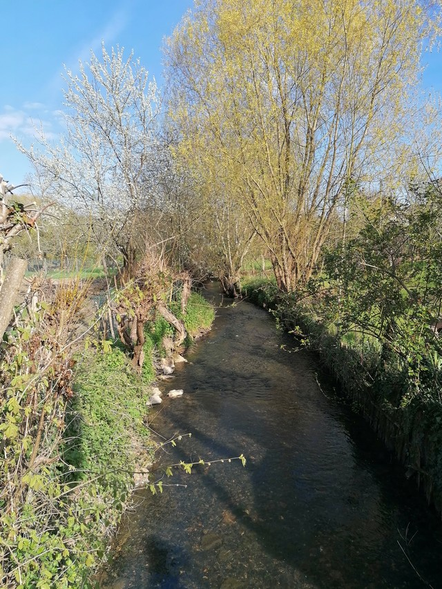

XXIX UNE CHANSON DE GUETTEUR
Au gué de ma raison - au gué de ma rivière -
Mon messager m'attend pour m'enseigner la nuit.
Il veille dans ce bois où le sommeil me fuit.
Quel ciel vaut le chaos qui peuple ma paupière?
Un oiseau de sa trille étourdit mes raisons.
Et je suis le buveur affranchi de saisons
Qui vacille, sachant le rite, l'oraison
Ayant apprivoisé le tumulte et la pierre.
A présent j'ai franchi les portes de l'oubli.
J'ai vu mon compagnon sur la berge du rêve:
Il a désenchaîné mon chant enseveli
Et j'ignore, ailé d'ombre et remué de sèves,
Si je suis le buveur ou l'oiseau qui s'en lève.
Michel Galiana (c) 1991
|

|
XXIX A LOOK-OUT'S SONG
By the ford of my sense - by the creek in my lea -
There my messenger waits to tell me of the night.
He watches in this wood where slumber flees from me:
Say, what sky could vie with the chaos in my eye?
With its trilling a bird bemuses my reason,
So that I quench my thirst in and out of season,
Reel along, well aware of rite and orison.
And having tamed both stir and stone rigidity,
Now I have left the gate of oblivion behind.
I saw my companion, left on the bank of night.
He unfettered the song never allowed to prance
About. I wonder, winged with shade, with saps enhanced:
If I am a drunkard or a bird taking flight?
Transl. Christian Souchon 01.01.2004 (c) (r) All rights reserved
|